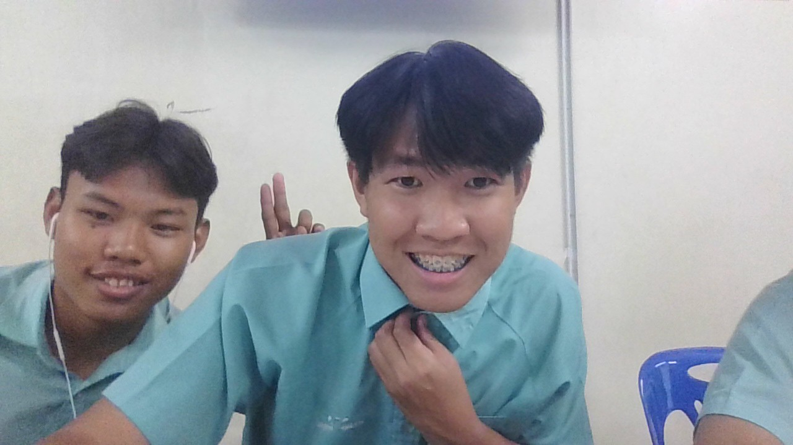

นักเรียนชั้นมัธยมศึกษาปีที่ 6 | แฟ้มสะสมผลงานดิจิทัล
สวัสดีครับ/ค่ะ ยินดีต้อนรับสู่แฟ้มสะสมผลงานของฉัน ข้อมูลตรงนี้ให้นักเรียนเขียนแนะนำตัวเองสั้นๆ เกี่ยวกับความสนใจ ความสามารถพิเศษ หรือเป้าหมายในอนาคตที่อยากจะเป็น...

อธิบายสั้นๆ เกี่ยวกับโครงงานที่เคยทำ ได้รับรางวัลอะไรไหม หรือทำเกี่ยวกับอะไร
เขียนเล่าถึงกิจกรรมพัฒนาโรงเรียน หรือการช่วยงานชุมชนที่นักเรียนเคยเข้าร่วม
รายละเอียดการแข่งขัน หรือทักษะคอมพิวเตอร์/ภาษา ที่นักเรียนภูมิใจ
📧 อีเมล: myemail@example.com
🌐 GitHub: github.com/username